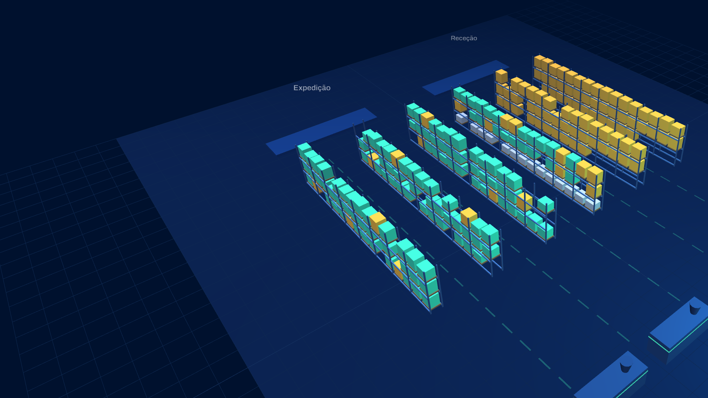
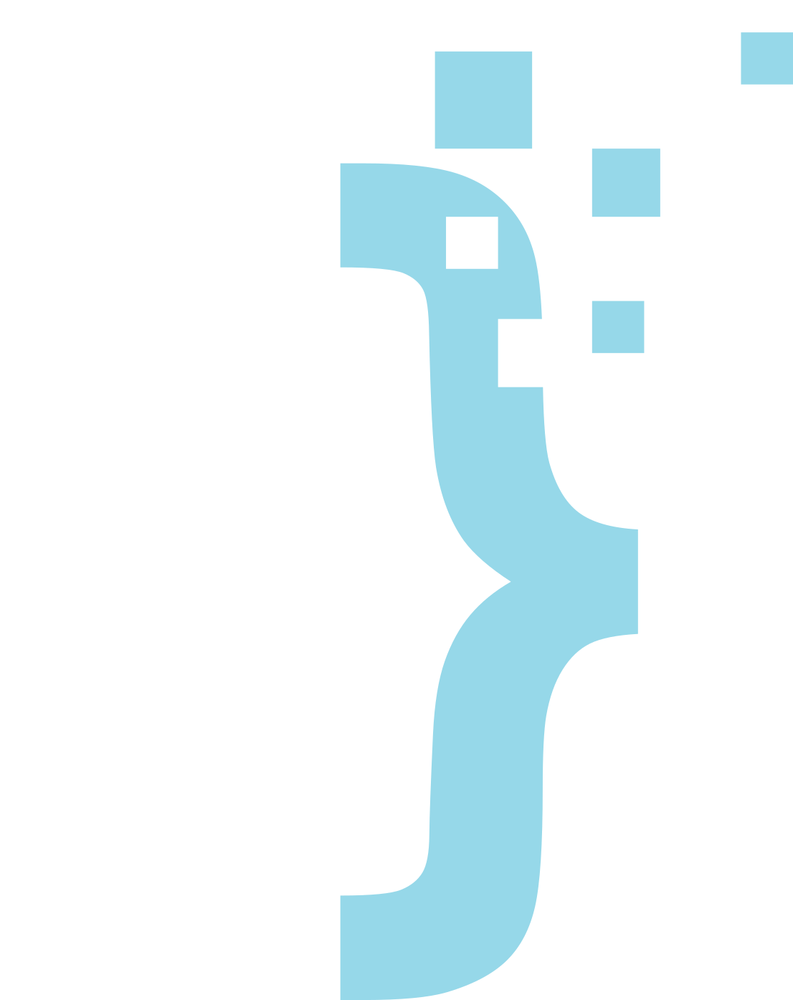

FastAppUm WMS 3D com IA que trabalha por cima do sistema que a NATIGAM já usa. Sem substituir nada, sem migrar dados.
Antes de começarmos
[FUNÇÃO] na NATIGAM
e fundador da FastApp, agência de soluções digitais e IA
Granulados e polímeros em big-bags e octabins: PP, PE, ABS, PA, masterbatches, borracha e silicones.
Peças de grande valor, guardadas entre produções. Encontrar o molde certo decide a hora de arranque da máquina.
Caixas e paletes à espera de expedição, com lotes e prazos de clientes de vários setores.
Continua a ser a fonte de verdade: artigos, lotes, encomendas e stock. Nada muda para quem o usa.
Só leitura dos dados existentes
Armazém em 3D, previsões, alertas, pesquisa em linguagem natural e relatórios automáticos.
Cada palete no sítio onde está, colorida pelo que contém. Passe o rato para ver artigo, lote e quantidade.
Arraste para rodar o armazém. Use a roda do rato para aproximar.
Armazém e dados de exemplo, não são dados da NATIGAM
Lê o consumo real das ordens de fabrico, projeta as próximas semanas e diz quando encomendar, com prazo de fornecedor incluído.
Valores de exemplo
Ao ritmo atual, o stock de PP homopolímero chega ao mínimo a 26 de novembro. O fornecedor entrega em 10 dias.
A IA vê o que sai mais vezes e propõe novas posições. Menos metros por dia, menos empilhadores a cruzar o armazém.
Simulação com dados de exemplo
Tampa roscada 38 mm, 4 cavidades
Faltam 17 600 ciclos. Sugestão: parar na troca de turno de sexta-feira.
Ciclos usados até à próxima manutenção. Moldes e valores de exemplo.
O lote PP-2610-07 (granulado PP homopolímero, 1 000 kg) entrou em 3 ordens de fabrico e chegou a 4 encomendas:
| Encomenda | Cliente | Peça | Quantidade | Expedida |
|---|---|---|---|---|
| ENC-0871 | Cliente A (automóvel) | Conector 6 vias | 12 000 un. | 21 out. |
| ENC-0874 | Cliente B (alimentar) | Tampa roscada 38 mm | 40 000 un. | 22 out. |
| ENC-0879 | Cliente A (automóvel) | Suporte de cablagem | 8 500 un. | 24 out. |
| ENC-0883 | Cliente C (eletrodomésticos) | Pega frontal | 6 000 un. | em armazém |
Cerca de 9 800 € imobilizados na estante E-06.
Lote PA-2610-12. Pedido de verificação enviado ao armazém.
Últimas 2 semanas face às 8 anteriores. Confirmar com a produção.
Alertas e valores de exemplo
Armazém: semana 44
Ações sugeridas: rever o ABS parado, corrigir a divergência em B-03-2 e antecipar a manutenção do molde M-118.
Cenário ilustrativo
por semana poupadas em procura, contagens e relatórios
de ruturas de matéria-prima, com alertas antecipados
de precisão do inventário, com divergências detetadas no dia
alterações ao sistema atual. Este número é garantido.
Estimativas para discussão. Os valores reais medem-se nos 30 dias do piloto.
Integrado ao sistema atual. Sem custos, sem compromisso e sem migração.
Setas ou espaço para avançar. F para ecrã inteiro.